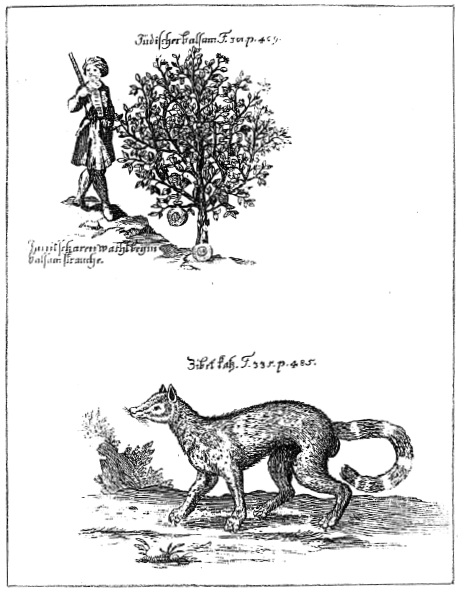

ŞEKİL 59. Pierre Pomet’nin bir eserinin Der aufrichtige Materialist und Specerey-Händler (Leipzig, 1717) başlıklı çevirisinden, Mekke pelesengi ve misk kedisi.50
Eczacı Albertus Seba (1665-1736), Etzel’de (Ostfriesland) doğmuş ve Amsterdam’da ölmüştür. 1698 yılında Amsterdam’da eczacılık sınavını vermiş, daha sonra orada Haarlemer Caddesi’nde kendi “Alman Eczanesi”ni açmıştır. Tutkulu bir şekilde hayvan kabukları, ilginç taşlar, içi doldurulmuş hayvanlar, egzotik doğa tarihine ilişkin nesneler gibi doğal malzemelerden koleksiyon yapmış ve oluşturduğu büyük koleksiyonunu, yeni ve daha büyük ikinci bir koleksiyon yapabilmek için, o sıralar Hollanda’yı ziyaret eden Rus Çarı Büyük (Deli) Petro’ya (1672-1725) 15 bin Gulden’e satmıştır. 69 yaşına geldiğinde ikinci koleksiyonunu çok sayıda resimle birlikte yayımlamak üzere çalışmaya başlamış ve hazırladığı bu koleksiyonunu bilim adamlarının kullanımına açmıştır. Ünlü bilgin Linnaeus, onun koleksiyonunu ziyaret edenlerden biri idi ve bu koleksiyonu çok değerli bulmaktaydı.50, 151 Yayımlamaya karar verdiği koleksiyonunun iki cildi ölümünden önce 1734 ve 1735 yıllarında, son iki cildi ise ölümünden sonra 1758 ve 1765 yıllarında yayımlanmıştır. İkinci koleksiyonu, 1752 yılında müzayedede satıldıktan sonra dünyanın dört bir yanına dağılmıştır.
Nicolas de Larmessin’in (1638-1694) Costumes grotesque et les metiers (Fantezi Giysiler ve Meslekler) adlı eserinden ilginç bir eczacı resmi, ŞEKİL 60’ta yer almaktadır.